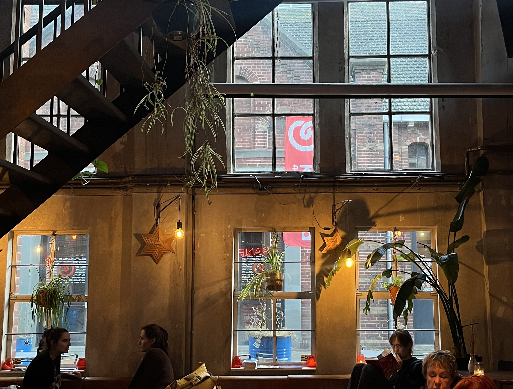

Programma
Journey to Utopia | Erlend Eirik Mo, 2020
Een Noors gezin besluit naar ecodorp Project Permatopia in Denemarken te verhuizen omdat ze zich zorgen maken om de aarde.
Green Tales of the City | Gwen Jansen, 2018
Creatieve oplossingen van Nederlanders om de stad te verduurzamen.
My Biggest Little Farm | John Chester, 2018
Feelgood documentaire over de ontwikkeling van een duurzame boerderij van 200 hectare buiten LA.
Wasted! The story of food waste | Nari, 2017
Elk jaar wordt er 1.3 miljard ton aan eten weggegooid, hoe kunnen we daarin verandering brengen?
Down to Earth | Renata & Rolf Winter, 2015
Een gezin besluit alles achter te laten om een wereldreis te maken van vijf jaar op zoek naar 'de redders van de aarde'.